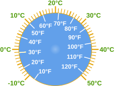
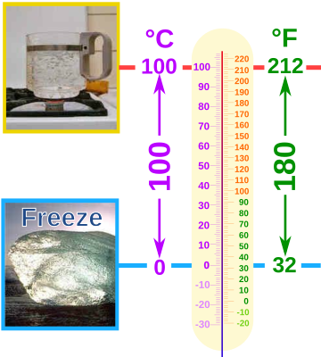
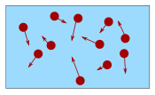

Conversion of Temperature
Celsius and Fahrenheit

There are two main temperature scales:
- °C, the Celsius Scale (part of the Metric System, used in most countries)
- °F, the Fahrenheit Scale (used in the US)
They both measure the same thing (temperature!), but use different numbers.
Quick Celsius (°C) / Fahrenheit (°F) Conversion:
Type a value in either box
Or use the slider
Or the Interactive Thermometer
Or this method:
| °C to °F | Divide by 5, then multiply by 9, then add 32 |
| °F to °C | Deduct 32, then multiply by 5, then divide by 9 |
Typical Temperatures
(only bold are exactly the same)
| °C | °F | Description | |
|---|---|---|---|
| 220 | 430 | Hot Oven | |
| 180 | 360 | Moderate Oven | |
| 100 | 212 | Water boils | |
| 40 | 104 | Hot Bath | |
| 37 | 98.6 | Body temperature | |
| 30 | 86 | Beach weather | |
| 21 | 70 | Room temperature | |
| 10 | 50 | Cool Day | |
| 0 | 32 | Freezing point of water | |
| −18 | 0 | Very Cold Day | |
| −40 | −40 | Extremely Cold Day (and the same number!) |
Some Tricks:
For these three conversions we can "flip the digits" (accurate within 1°):
°C °F
28 ⇄ 82
16 ⇄ 61
04 ⇄ 40
Oven Temperatures in the range 150°C to 200°C: double °C to get °F (accurate within 8°F):
| °C | °F Estimate |
°F Actual |
| 200 | 400 | 392 |
| 180 | 360 | 356 |
| 160 | 320 | 320 |
| 150 | 300 | 302 |
Going the other way: for the range 300°F to 400°F we can halve °F to get °C (accurate within 4°C).
Explanation
Celsius and Fahrenheit both measure the same thing (temperature!), but use different numbers:
- Boiling water (at normal pressure) measures 100° in Celsius, but 212° in Fahrenheit
- And as water freezes it measures 0° in Celsius, but 32° in Fahrenheit
Like this:

Looking at the diagram, notice:
- The scales start at a different number (0 vs 32), so we'll need to add or subtract 32
- The scales rise at a different rate (100 vs 180), so we'll also need to multiply
And so, to convert:
180100 can be simplified to 95, and 100180 can be simplified to 59, so we get this:
°C to °F: Divide by 5, then multiply by 9, then add 32
°F to °C: Subtract 32, then multiply by 5, then divide by 9
Example: Convert 25° Celsius (a nice warm day) to Fahrenheit
First: 25° / 5 = 5
Then: 5 × 9 = 45
Then: 45 + 32 = 77°F
Example: Convert 98.6° Fahrenheit (normal body temperature) to Celsius
First: 98.6° − 32 = 66.6
Then: 66.6 × 5 = 333
Then: 333 / 9 = 37°C
We can swap the order of divide and multiply if we want, but don't change the add or subtract. So this is also OK:
Example: Convert 98.6° Fahrenheit to Celsius (again)
First: 98.6° − 32 = 66.6
Then: 66.6 / 9 = 7.4
Then: 7.4 × 5 = 37° C
(Same answer as before, was it easier or harder this way?)
Fahrenheit to Celsius: (°F − 32) × 59 = °C
Other Methods That Work
Use 1.8 instead of 9/5
9/5 is equal to 1.8, so we can also use this method:
Fahrenheit to Celsius: (°F − 32) / 1.8 = °C
To make "×1.8" easier we can multiply by 2 and subtract 10%, but it only works for °C to °F:
Example: Convert 20° Celsius (A nice day) to Fahrenheit
- 20x2 = 40
- less 10% is 40−4 = 36
- 36+32 = 68° F
Add 40, Multiply, Subtract 40
Since both scales cross at −40° (−40° C equals −40° F) we can:
- add 40,
- multiply by 5/9 (for °F to °C), or 9/5 (for °C to °F)
- subtract 40
Like this:
Fahrenheit to Celsius: Add 40, multiply by 5/9, then subtract 40
Example: Convert 10° Celsius (A cool day) to Fahrenheit
- 10+40 = 50
- 50×9/5 = 90
- 90−40 = 50° F
Quick, but Not Accurate
Fahrenheit to Celsius: Subtract 30, then halve
Examples °C → °F:
- 0° C → 0+30 → 30° F (low by 2°)
- 10° C → 20+30 → 50° F (exact!)
- 30° C → 60+30 → 90° F (high by 4°)
- 180° C → 360+30 → 390° F (high by 34°, not good)
Examples °F → °C:
- 40° F → 10/2 → 5° C (almost right)
- 80° F → 50/2 → 25° C (low by about 2°)
- 120° F → 90/2 → 45° C (low by about 4°)
- 450° F → 420/2 → 210° C (low by about 22°, not good)

Footnote: Temperature is a measure of how fast an object's particles are moving.